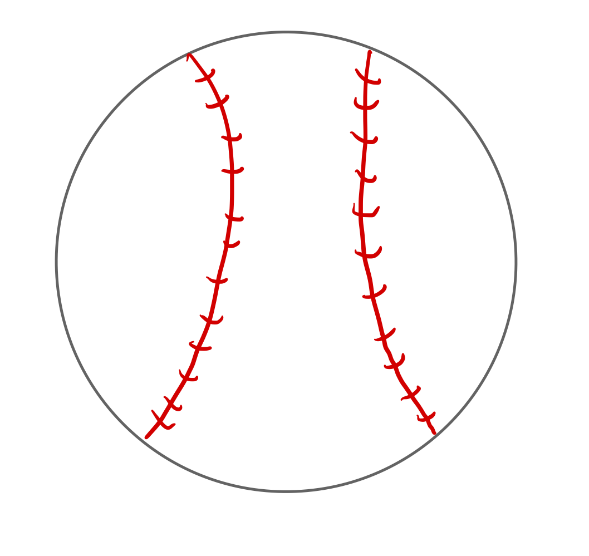
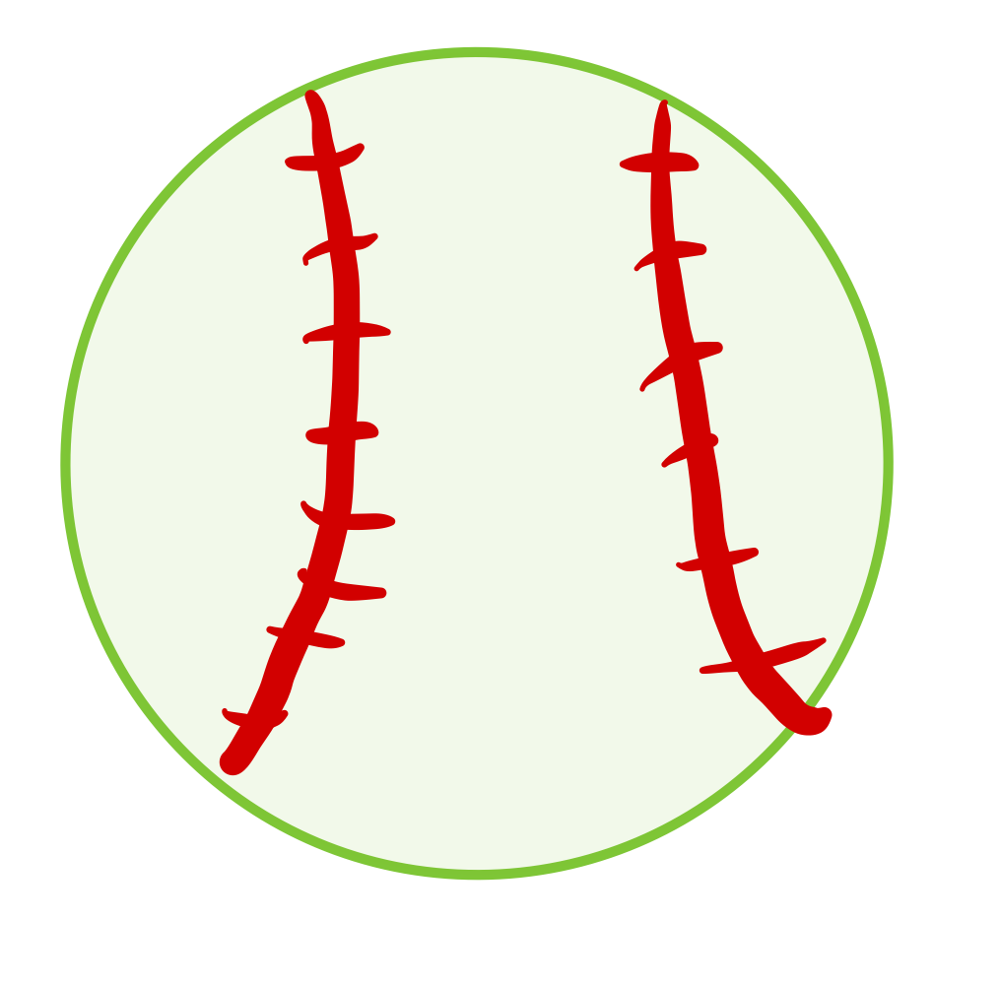

Hitting
 When trying to hit a baseball there are many things that a person can focus on. Things such as where your feet are at, where your hands are, how tall or hunched over you are, how close or far away from the plate, whether you lift your leg up or not, if you step, or not, whether you finish your swing with one or two hands. All of these pieces together go into hitting. The biggest key to hitting is finding a comfortable rhythm that works for you, but most importantly something that gets good results. The phrase, if it ain't broke, don't fix it, is something that you can go by as a hitter.
There are some differences between hitting a baseball and hitting a softball. For one, the size of the ball is different. A softball is much bigger than a baseball is. For this reason, a baseball bat is wider around than a softball bat is. Another difference is that softball pitchers throw in an underhand motion, rather than overhand. This makes baseball pitchers throw harder than softball pitchers. Also, the softball pitcher area is flat, where the baseball mound is elevated. A softball mound is closer to home plate than a baseball mound as well.
The argument over whether it is harder to hit a softball or a baseball has been around forever. It is one of the main "dugout talks" of each of the sports. Obviously softball players believe it is harder to hit a softball and baseball players believe it is harder to hit a baseball. So who is right? According to ESPN's sports science department the answer is Softball when looking just at the numbers. However it isn't as simple as just looking at some numbers because you can throw more pitches in baseball and have to try to hit a smaller target. ESPN found that in Softball you have .35 seconds of reaction time and in baseball you have .44 seconds. So the debate continues. What do you think is harder to hit?
My overall message is that hitting a softball or a baseball is very hard. I would say that it is one of the hardest if not the hardest thing to do in sports. The hand eye cordination, timing, and strength needed is crazy in order to do.